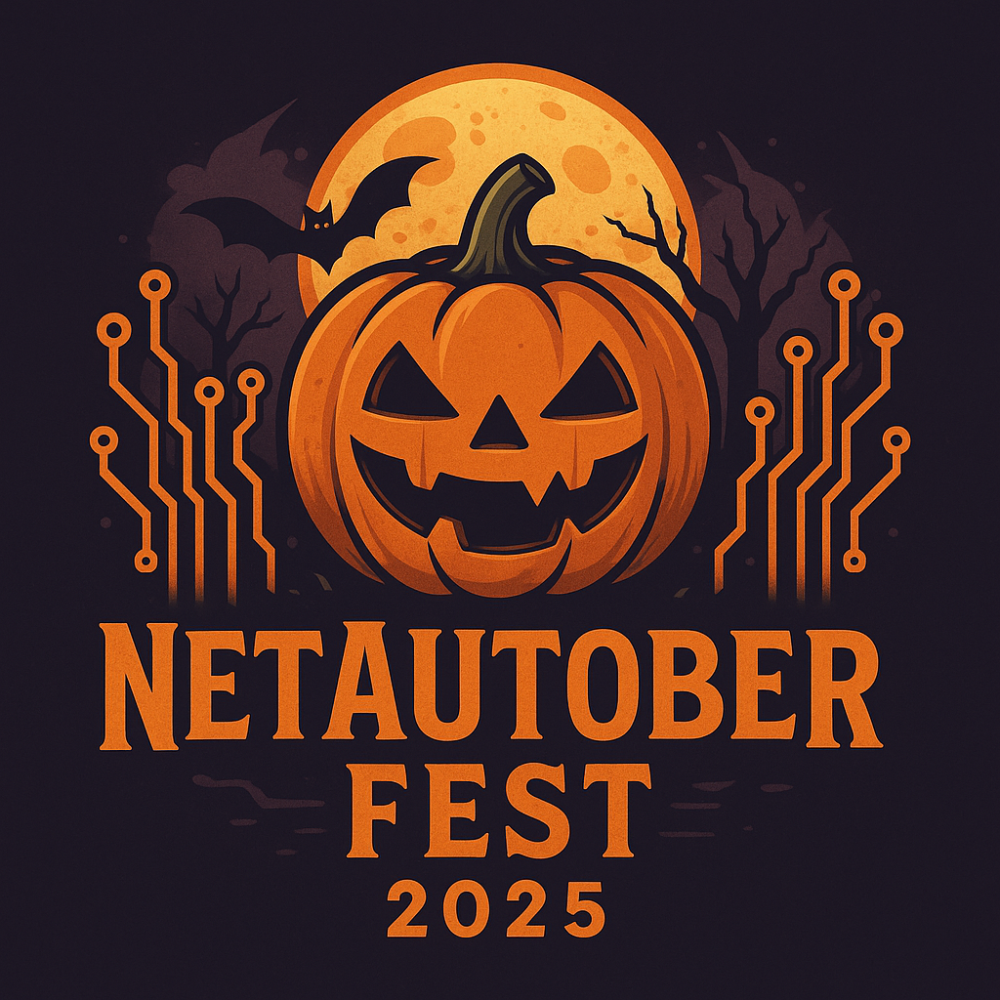

About
NetAuto Group RheinMain brings together network automation enthusiasts and professionals to share knowledge, explore tools, and solve real-world challenges. Our events are interactive forums to connect, collaborate, and learn from each other's experience.
Next event: NetAutoberfest
Date: 2. October 2025, 17:00 CEST
Location: Logicalis Office, Siemensstraße 10, 63263 Neu-Isenburg, Germany
Proudly supported by Logicalis GmbH. Food, drinks, and networking included!
Agenda
- 17:00 CEST: Arrival and networking
- 18:00 CEST: Welcome and Introduction
- 18:15 CEST: Hackathon Kickoff
- 18:15 CEST: Talks are beginning
- 18:15 CEST: Urs Baumann: Pydantify How can we bridge the gap between YANG data models and modern Python development? Urs will introduce Pydantify, a tool that generates Pydantic models from YANG, making network data easier to validate, manipulate, and integrate into Python workflows.
- 18:45 CEST: Christian Drefke: Taming IaC Projects with Stacks Large-scale Terraform/OpenTofu environments can quickly become overwhelming. Christian will share practical strategies for structuring and scaling IaC projects with stacking approaches, showing real-world examples of how Terraform and Terramate can be orchestrated in CI/CD pipelines.
- 19:15 CEST: Break
- 19:30 CEST: Pete Crocker: SoT for IaC: The Infrahub Open Source Project Every automation journey needs a reliable Source of Truth (SoT). Pete will present the Infrahub open source project, highlighting why it matters for network automation and how it enables seamless deployment of IaC with Ansible, Terraform, and workflow orchestrators.
- 20:00 CEST: Saeed Ali: Creating a Digital Twin Network Using a CI/CD Pipeline What if you could test changes safely before pushing them into production? Saeed will demonstrate how to build a digital twin network using Containerlab (Cisco and Arista) and YANG models, driven entirely through a GitLab CI/CD pipeline. Expect a high-level walkthrough of the tools and automation practices that make this approach practical and powerful.
- 20:30 CEST: Wrapup Hackathon
- 20:45 CEST: Networking
Founders
Bootcamp
Learn network automation with us!
Join our GitHub Bootcamp to learn or refresh your network automation skills!